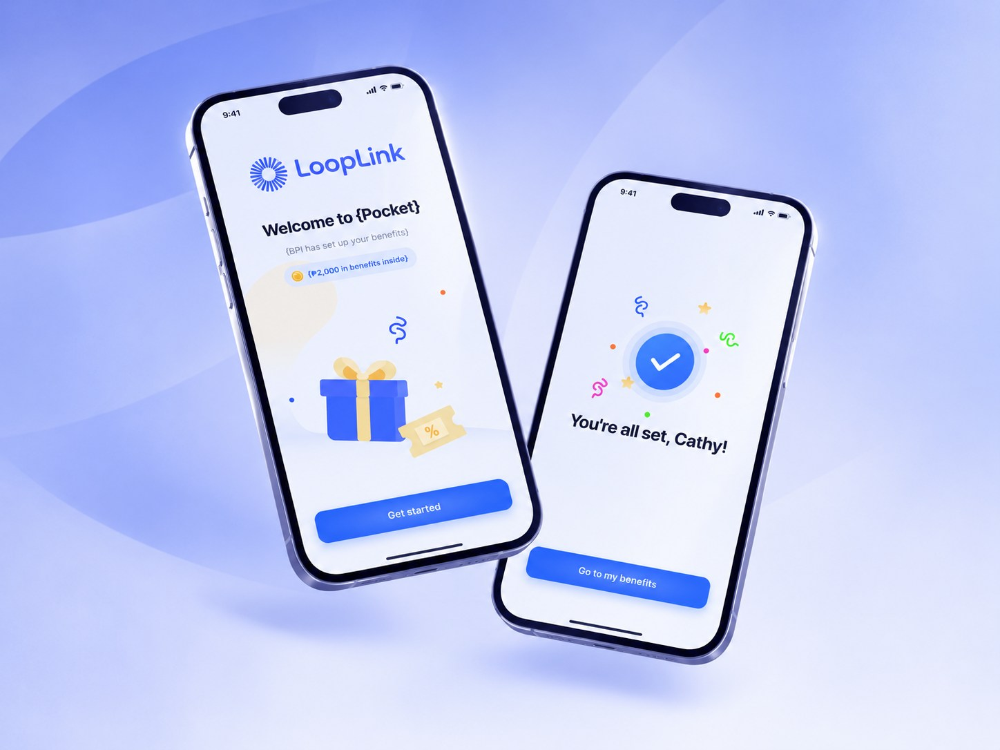

Product Design Internship
Designing across products, systems and experiences

About LoopLink
LoopLink AI is an AI-native retail technology company building intelligent commerce infrastructure for physical retail. Its platform connects offline retail activity with digital intelligence, so retailers and brands can create, distribute, track and optimise campaigns, rewards, vouchers and engagement programmes across channels.
Under NDA
This project is protected under a non-disclosure agreement and cannot be shared publicly.
Over two months at LoopLink AI, I explored UI foundations, Pocket's visual language and complex operational workflows across LoopLink's product ecosystem.
My part
- 01. UI foundations and reusable components
- 02. Pocket UI exploration
- 03. UX documentation and information architecture
- 04. Prototyping and interaction design
The outcome
“A stronger understanding of product design, from visual systems to user experiences.”